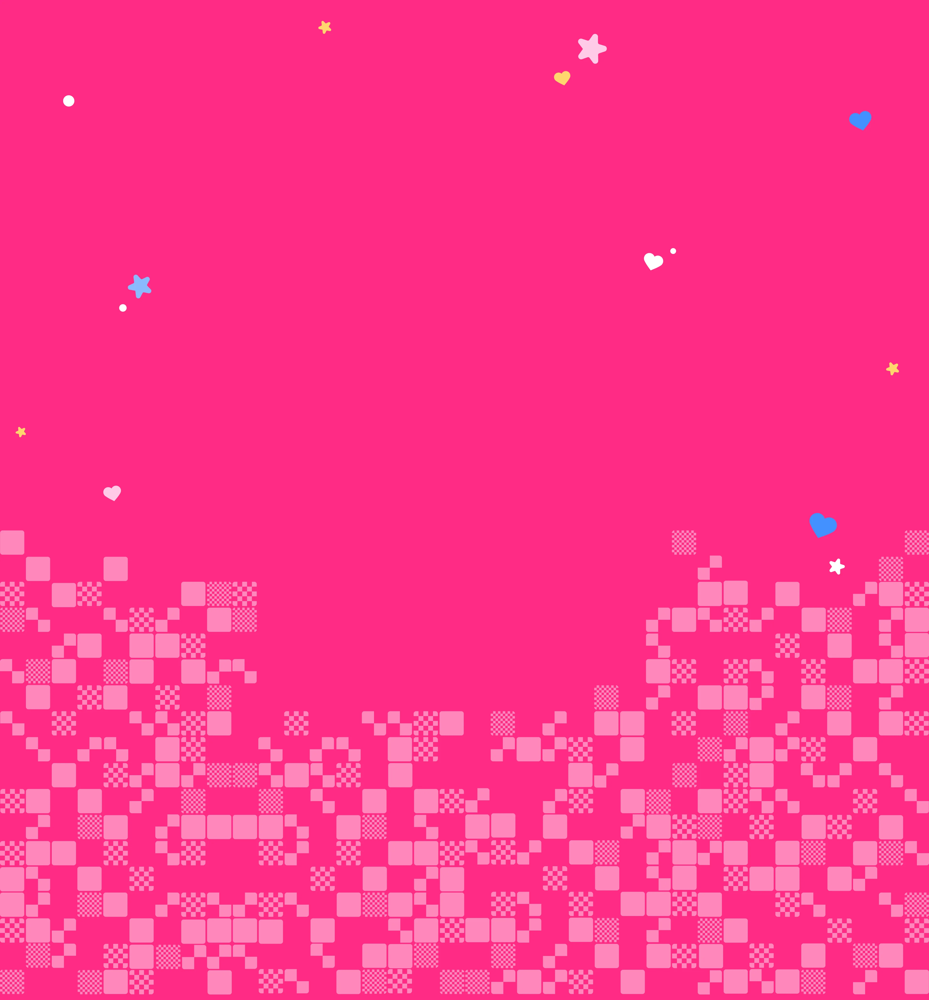
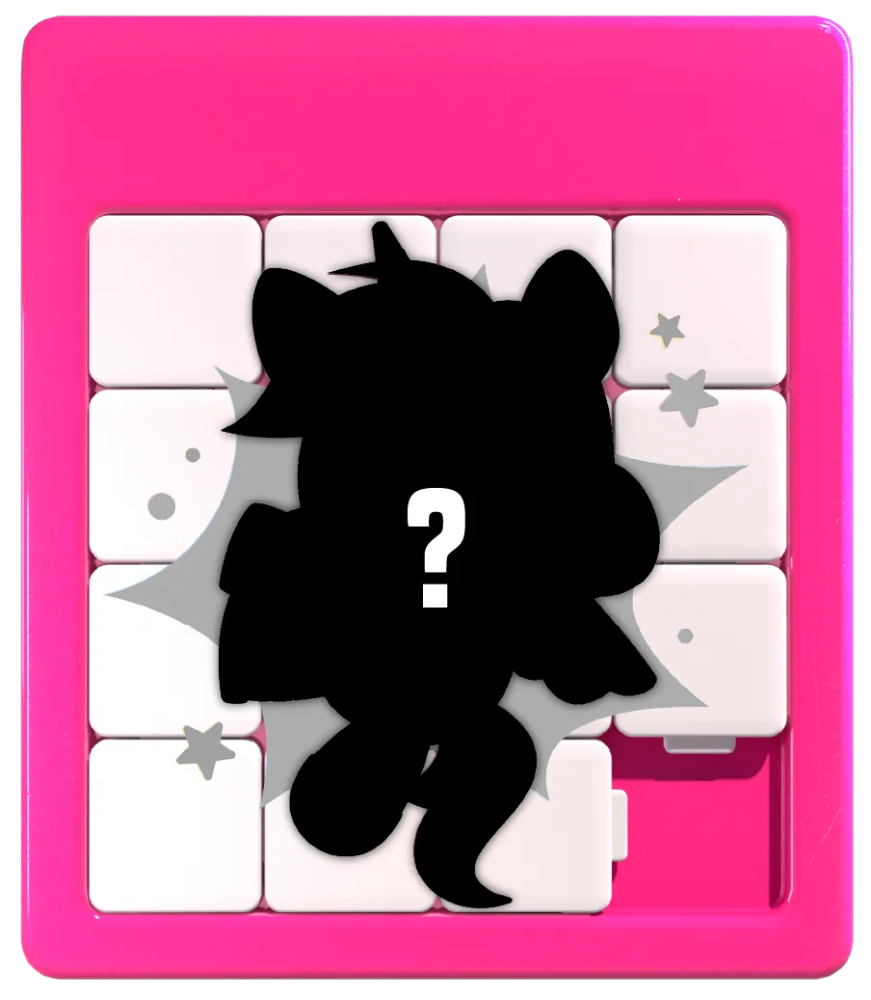

오프닝
2026.11.05
06:00 PM
전시기간
2026.11.05
~ 2026.11.09
D-??
이번 전시는 26명이 각자의 방식으로 고민하고 시도하며 완성한
결과물입니다.
슬라이딩 퍼즐처럼 수많은 시행착오를 거쳐 완성된 다양한 형태의
작품을
하나의 2026 PRODUCT COLLECTION으로 담았습니다.
강남 모나코 스페이스
서울 서초구 서초대로 397 부띠크모나코 지하1층
🧩